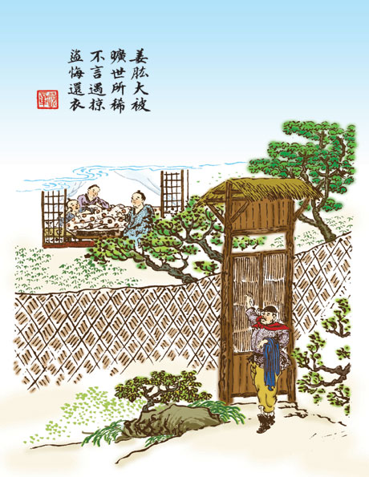

姜肱大被

汉朝时候，有个姓姜名肱的，表字叫做伯淮。和他的两个弟弟，一个叫姜仲海，一个叫姜季江的，天性非常友爱。虽然他们兄弟三个人，各自娶了妻子，可是不忍分开了睡，所以他们做了很大的被，兄弟三个人一同睡着。 有一次，兄弟们一同到府城里去，晚上碰着了强盗，就要杀他。他们兄弟三个人都抢着死，强盗也就把三个人都释放了，只抢了一些衣服和金钱去。 到了府城里，别人家看见姜肱兄弟们都没有了衣服，就问姜肱这是什么缘故。姜肱就用别的话来支开了，终究不肯说明，碰着强盗这一回的事。强盗们得知了，觉得很感激，并且很懊悔，就到了姜肱那儿，叩头谢罪，把以前抢去的物件，统统都还了他们。